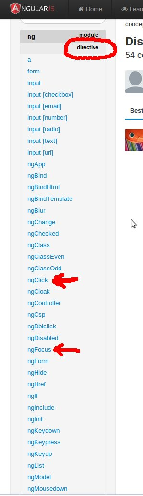

2-way data binding, declarative UIs, directives, awesome is literally on tap
HTML works wonderfully for static documents:
<p>hello world!</p>
This is not true for dynamic pages:
<p id="greeting1"></p>
<script>
var isIE = document.attachEvent;
var addListener = isIE
? function(e, t, fn) {
e.attachEvent('on' + t, fn);}
: function(e, t, fn) {
e.addEventListener(t, fn, false);};
addListener(document, 'load', function(){
var greeting = document.getElementById('greeting1');
if (isIE) {
greeting.innerText = 'Hello IE!';
} else {
greeting.textContent = 'Hello Modern Web Browser!';
}
});
</script>
JavaScript frameworks have matured. This isn't 2005, it's 2013 and modern tools produce better, cleaner apps. Angular can make life easier.
... but GWT is a modern tool
(sort of) Two categories of web apps.
You have a model.
That model needs a view.
This means you need to write code to keep the model & view changes together. If the model changes, you need to change the view.
<div ng-app>
<label>Name:</label>
<input type="text" ng-model="yourName">
<p>Hello {{yourName}}!</p>
</div>
Angular does this "automatic update" by basic dirty-checking. Dirty Checking is semantically correct all the time.
If there is a change in the value, then it fires a change event.
Dirty checking is not very performant (vs change listeners, like what Knockout and BackBone use). But lets put this in perspective...
Turns out, basically yes (exceptions apply)
Expands HTML's vocabulary (reuseable).
Hint: Domain Specific Vocabulary
Allows UIs to be declarative in their layout and design.
Are functionally equivalent to HTML5 Web Components.
Plug 'em in! 
dirEx.controller('DirectiveController', ['$scope', function($scope) {
$scope.focused = false;
$scope.toggle = function toggle() {
$scope.focused = !$scope.focused;
};
}]);
<div id="directiveExample" ng-controller="DirectiveController">
<input type="text" ng-model="yourName"
ng-focus="toggle()"
ng-blur="toggle()"
placeholder="Enter a name here">
<br />
<h5>{{yourName}}</h5>
<p style="font-size: small" ng-show="focused">
Please Enter your First Name, followed by your last initial, eg 'Jack W'
</p>
Please Enter your First Name, followed by your last initial, eg 'Jack W'
dirExTwo.controller('DirectiveController', ['$scope', function($scope) {
$scope.profiles = [
{ user: 'testUser', age: 30, rank: 'LT'},
{ user: 'Ada', age: 2, rank: 'dog'},
{ user: 'Alan Turing', age: 41, rank: 'scientist'},
{ user: 'Alan Kay', age: 73, rank: 'scientist'}
];
}]);
<div id="directiveExampleTwo" ng-controller="DirectiveController">
<ul>
<li ng-repeat="profile in profiles">Name: {{profile.user}}, Age: {{profile.age}}, Rank: {{profile.rank}}
</li>
</ul>
</div>
We can define our own HTML: elements, attributes, classes & comments
dirExThree.controller('ProfileController', ['$scope', function($scope) {
$scope.profiles = [
{ user: 'testUser', age: 30, rank: 'LT', imgHref: 'http://www.enetpulse.com/wp-content/uploads/testuser.png'},
{ user: 'Ada', age: 2, rank: 'dog', imgHref: 'img/ada_dog.jpg'},
{ user: 'Alan Turing', age: 41, rank: 'scientist', imgHref: 'http://upload.wikimedia.org/wikipedia/en/c/c8/Alan_Turing_photo.jpg'},
{ user: 'Alan Kay', age: 73, rank: 'scientist', imgHref: 'http://upload.wikimedia.org/wikipedia/commons/thumb/c/c1/Alan_Kay2.jpg/220px-Alan_Kay2.jpg'}
];
}]);
dirExThree.directive('profileCard', function() {
return {
restrict: 'E',
scope: {
imgHref: '@imgHref',
name: '@name',
age: '@age',
rank: '@rank'
},
template: "<div style='border: 2px; border-style: solid;'><img src='{{imgHref}}'><br/><h4>{{name}}</h4><ul><li>{{age}}</li><li>{{rank}}</li></ul></div>",
link: function (scope, element, attrs) {
console.log("using - name: " + scope.name + " rank: ", scope.rank);
}
};
});
<div id="directiveExampleThree" ng-controller="ProfileController"
class="fragment"
style="overflow: scroll; height: 600px;">
<profile-card ng-repeat="profile in profiles"
name="{{profile.user}}"
age="{{profile.age}}"
img-href="{{profile.imgHref}}"
rank="{{profile.rank}}">
</profile-card>
</div>
<user-profile>
<google-map>
<vessel-description>
<ANYTHING>
Angular defines where the controller is.
Views are the HTML and CSS.
The Model is the $scope object.
$scope is the glue between the View and Controller.
Angular ships with a baked-in end-to-end test runner.
Write tests using Jasmine-like syntax
Requires webserver, node.js to host static angular files.
Each block of end-to-end test is called a scenario.
describe('Buzz Client', function() {
it('should filter results', function() {
input('user').enter('jacksparrow');
element(':button').click();
expect(repeater('ul li').count()).toEqual(10);
input('filterText').enter('Bees');
expect(repeater('ul li').count()).toEqual(1);
});
});
This scenario describes the requirements of a Buzz Client, specifically, that it should be able to filter the stream of the user. It starts by entering a value in the input field with ng-model="user", clicking the only button on the page, and then it verifies that there are 10 items listed. It then enters 'Bees' in the input field with ng-model='filterText' and verifies that the list is reduced to a single item.
Dependencies are passed in where they are needed
Angular does this with a injector service, and the $inject annotation
We get 3 approaches to define dependencies, each is progressively more complex (and capable):
You've witnessed it. All examples are independent angular examples.
<html ng-app>
<div id="bindingExample">
<label>Name:</label>
<input type="text" ng-model="yourName" placeholder="Enter a name here">
<hr>
<h1>Hello {{yourName}}!</h1>
</div>
// Example 1 - Data Binding
angular.module('BindingExampleApp', []);
angular.bootstrap($('#bindingExample'), ['BindingExampleApp']);
Use ids on elements (divs), and use Angular bootstrap to tie those ids to angular modules you name/create.